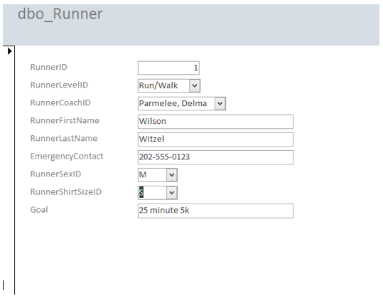

Designing and Building Data Models with SQL
KEEPING TRACK OF FITNESS CLUB MEMBERSHIP
Tracking attendance and membership at a fitness club can be cumbersome if you don't have a way of organizing and manipulating the data. I created a relational database model in SQL to allow for easy queries and modification of the data via Microsoft SQL Server.
I created 5 tables: MemberShipTypes, Members, Instructors, Classes and Attendances
Each table has both primary and foreign key constraints. This allows for relationships to be made between tables and easy data manipulation. I also included a series of queries to verify data accuracy. The script can run over and over again since I included the DROP statements at the beginning.
Code is on GitHub.
Tools used: SQL, Microsoft SQL Server
ENTITY RELATIONSHIPS AND DATA NORMALIZATION
In this project, I worked with Ricky Diep to design a data model and a database that tracks participants in the 5k running program. I started by creating relationship diagrams to draw relationships between different tables in the database.
I normalized the data by creating multiple tables linked by ids instead of using one big table to hold all the data. This makes an efficient logical model with no data redundancy. After inserting data into each table in MS SQL Server, I created a front end access to the database using Microsoft Access which allows the database to be easily queried.
Tools used: SQL, Microsoft Visio, Microsoft SQL Server, Microsoft Access
Entity Relationship Diagram
Third Normal Form Logical Model
Microsoft Access Front-end